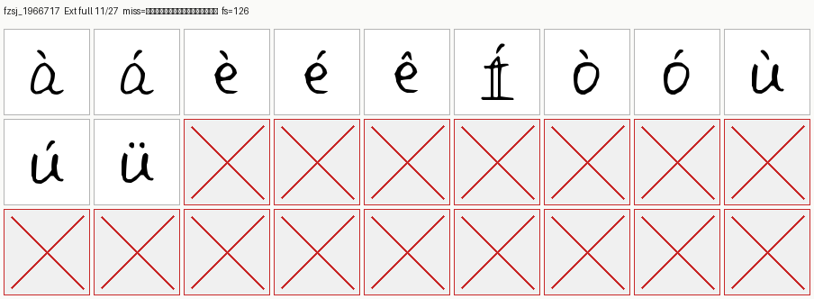
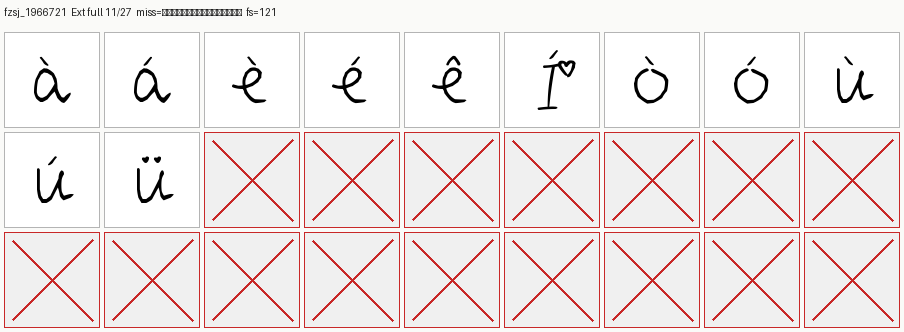
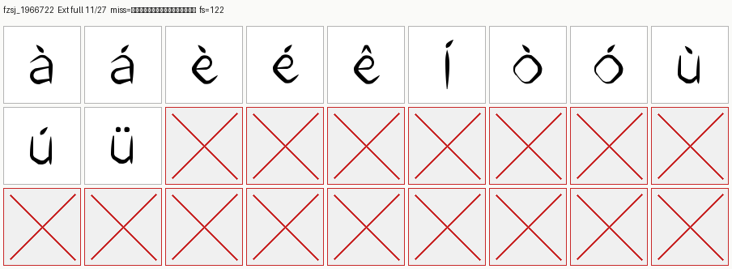
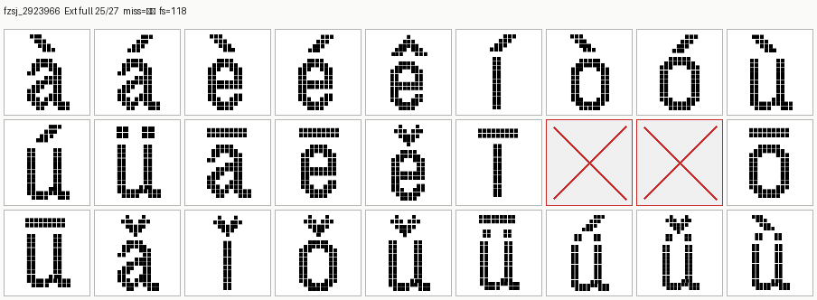
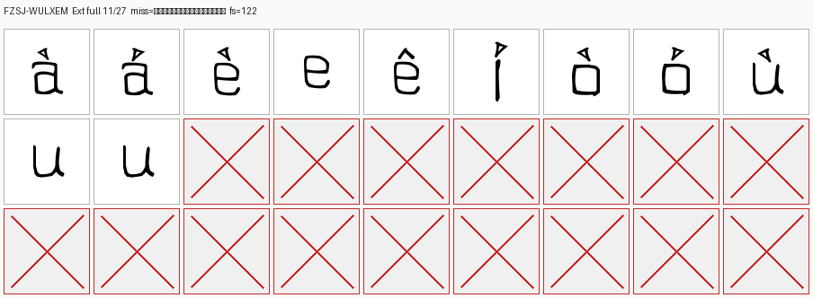
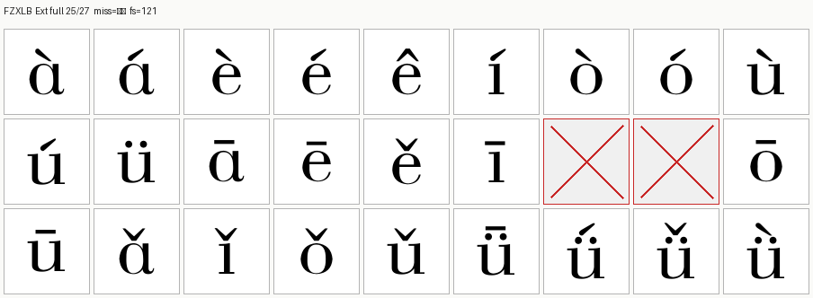

fzsj_1966717 手迹笔芯体
scripts=['latin', 'latin_ext'] · Ext 11/27 · 29821_fzsj_1966717.TTF
缺字：āēěīńňōūǎǐǒǔǖǘǚǜ

探针有墨 ≠ 全 target 可用；这些字体因此未进 fonts_verified.json。
fzsj_1966721 手迹爱心吧噗
scripts=['latin', 'latin_ext'] · Ext 11/27 · 29825_fzsj_1966721.TTF
缺字：āēěīńňōūǎǐǒǔǖǘǚǜ

探针有墨 ≠ 全 target 可用；这些字体因此未进 fonts_verified.json。
fzsj_1966722 小人鱼的眼泪_YS
scripts=['latin', 'latin_ext'] · Ext 11/27 · 29826_fzsj_1966722.TTF
缺字：āēěīńňōūǎǐǒǔǖǘǚǜ

探针有墨 ≠ 全 target 可用；这些字体因此未进 fonts_verified.json。
fzsj_2923481 清晰护眼复古像素
scripts=['latin', 'latin_ext', 'hiragana', 'katakana', 'zhuyin'] · Ext 25/27 · 33133_fzsj_2923481.TTF
缺字：ńň
探针有墨 ≠ 全 target 可用；这些字体因此未进 fonts_verified.json。
fzsj_2923966 复古像素粗体
scripts=['latin', 'latin_ext', 'hiragana', 'katakana', 'zhuyin'] · Ext 25/27 · 33134_fzsj_2923966.TTF
缺字：ńň

探针有墨 ≠ 全 target 可用；这些字体因此未进 fonts_verified.json。
FZSJ-WULXEM 污力小恶魔
scripts=['latin', 'latin_ext'] · Ext 11/27 · 21885_FZSJ-WULXEM.TTF
缺字：āēěīńňōūǎǐǒǔǖǘǚǜ

探针有墨 ≠ 全 target 可用；这些字体因此未进 fonts_verified.json。
FZXLB 方正秀麗
scripts=['latin', 'latin_ext', 'hiragana', 'katakana'] · Ext 25/27 · 2356_FZXLB.TTF
缺字：ńň

探针有墨 ≠ 全 target 可用；这些字体因此未进 fonts_verified.json。